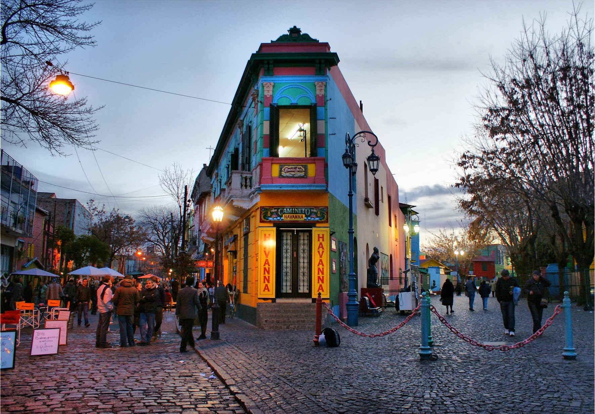
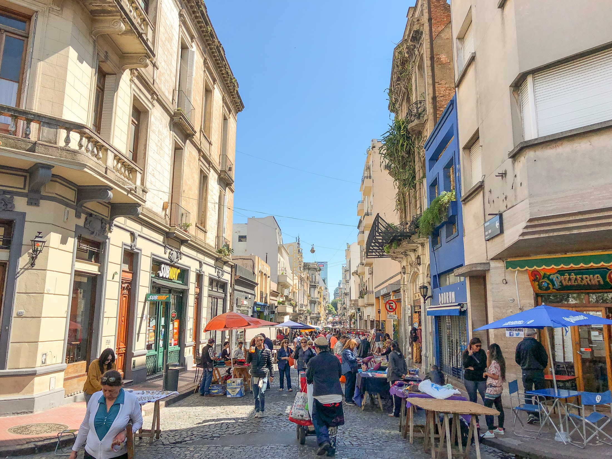
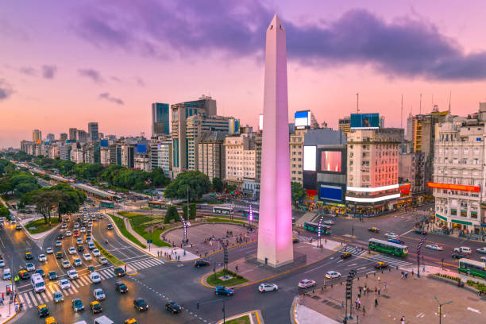
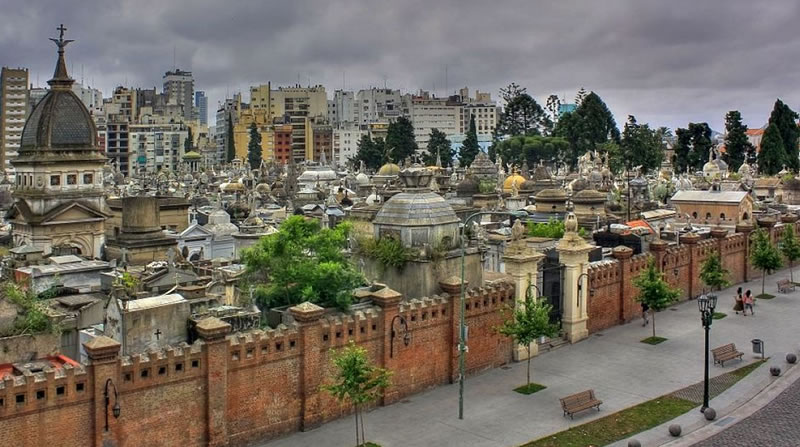
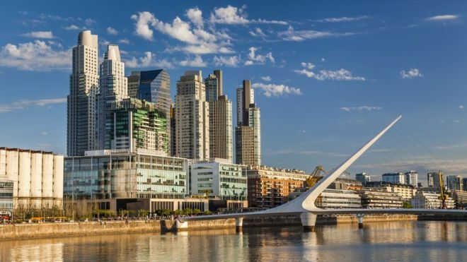
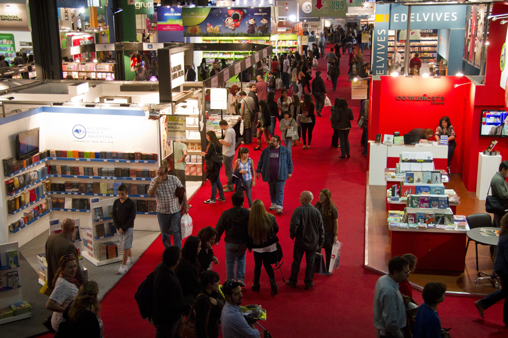
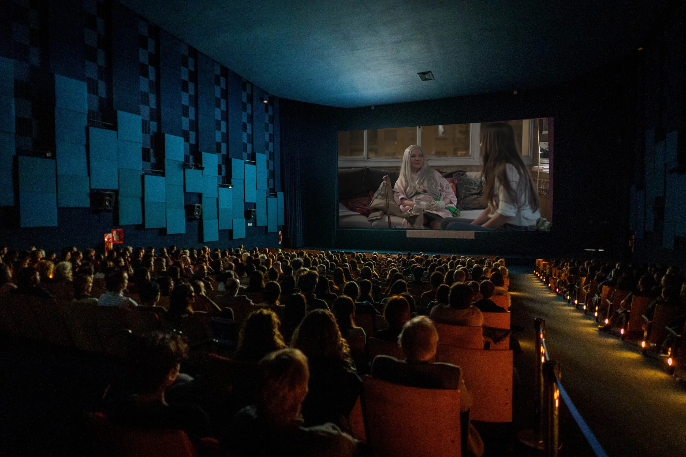
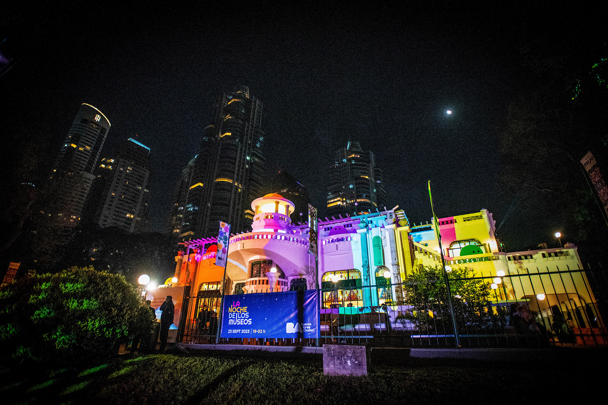

La Boca
Conocido por su colorido "Caminito", La Boca es un barrio lleno de arte callejero, tango en vivo y cultura popular. Es también la cuna del Club Boca Juniors.
Descubrí la magia de la capital argentina con un paquete especial de 5 días y 4 noches.
Desde $100 USD por persona.
¡Reservar ahora!
Conocido por su colorido "Caminito", La Boca es un barrio lleno de arte callejero, tango en vivo y cultura popular. Es también la cuna del Club Boca Juniors.

Uno de los barrios más antiguos, ideal para recorrer sus calles empedradas, ferias de antigüedades y locales de tango. Su arquitectura colonial lo hace único.

Símbolo icónico de la ciudad, ubicado en la avenida 9 de Julio, es un punto de encuentro y referencia turística.

Famosa por su cementerio histórico, museos y cafés elegantes. Es un barrio distinguido con un aire europeo.

La zona más moderna de la ciudad. Ofrece restaurantes de lujo, paseos costeros y una vista increíble al río.
Buenos Aires fue fundada por Pedro de Mendoza en 1536 y refundada por Juan de Garay en 1580. Durante el siglo XIX, la ciudad creció de forma explosiva gracias a la inmigración europea, especialmente de Italia y España. Esta mezcla cultural dio forma a su identidad actual, una fusión de tradiciones europeas y criollas. Hoy es una metrópolis vibrante, centro político, económico y cultural de Argentina.

La Feria del Libro de Buenos Aires, que se celebra entre abril y mayo, es uno de los eventos literarios más importantes de habla hispana. Durante este evento, se reúnen escritores, editoriales y lectores de todo el mundo para compartir y celebrar la literatura. Además de las presentaciones de libros y firmas de autores, la feria ofrece conferencias, charlas y actividades culturales que enriquecen la experiencia literaria, convirtiéndola en una de las principales citas para los amantes de la lectura.
El Festival Internacional de Tango, que se celebra cada agosto en Buenos Aires, es un evento que celebra la música y el baile más representativos de Argentina. Durante el festival, artistas nacionales e internacionales se presentan en diversas actividades, como conciertos, competencias de baile y exhibiciones, destacando la rica tradición del tango. Este evento atrae a miles de visitantes y es una verdadera fiesta cultural que rinde homenaje al tango como parte esencial de la identidad argentina.

BAFICI (Buenos Aires Festival Internacional de Cine Independiente), que se celebra anualmente en abril, es un evento de cine que también incluye presentaciones musicales con artistas nacionales e internacionales. Además de sus proyecciones de cine independiente, el festival ofrece conciertos en vivo, performances y actividades que fusionan el arte del cine con la música, creando una experiencia cultural diversa y vibrante para el público.

Lollapalooza Argentina es un festival de música que se celebra anualmente en Buenos Aires, con artistas nacionales e internacionales de géneros como rock, pop y electrónica. Es uno de los eventos más grandes de América Latina, donde se mezclan grandes nombres globales con talentos locales. Además de los conciertos, el festival ofrece opciones gastronómicas y actividades interactivas, creando una experiencia única para los asistentes.

La Noche de los Museos, que se celebra en noviembre, ofrece acceso gratuito a decenas de museos de Buenos Aires hasta la medianoche. Durante este evento, los museos abren sus puertas de forma especial para que los visitantes puedan disfrutar de exposiciones, actividades culturales y recorridos nocturnos. Es una oportunidad única para explorar el patrimonio artístico y cultural de la ciudad en un ambiente diferente y accesible para todos.
Buenos Aires tiene un clima templado húmedo, ideal para visitar durante todo el año.
| Estación | Temperatura promedio | Clima |
|---|---|---|
| Verano | 28-35°C | Caluroso y húmedo |
| Otoño | 18-24°C | Suave, ideal para pasear |
| Invierno | 10-18°C | Frío leve y seco |
| Primavera | 20-26°C | Agradable y soleado |